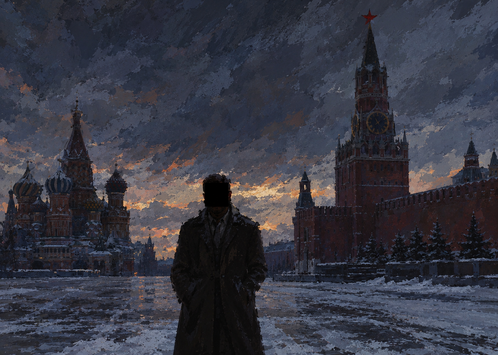

Малая студия, разрабатывающая интерактивные истории. Здесь фиксируются проекты, их продвижение и те, кто над этим работает.
Военная драма на движке Meander. История Григория Штефаныча, чьё детство и взросление проходят на фоне затянувшейся войны.

16 января 1998 года. Республика Северная Русь. Вы назначены сотрудником Аппарата Правительства, и сегодня ваш первый рабочий день. На столе письма, директивы, новости и жалобы граждан: от сломанного водопровода в Миногорске до директивы о «стабилизации обстановки» на фоне выступлений ВСП.
Каждое решение влияет на рейтинг социальной поддержки и на концовку. Следуйте правилам, и получите хорошую. Делайте что угодно, и вас возненавидит вся страна.
Жадность — это человеческий фактор. Именно из-за него мы хотим большего. И это очень, очень плохо…
Сообщения приходят прямо разработчику студии.